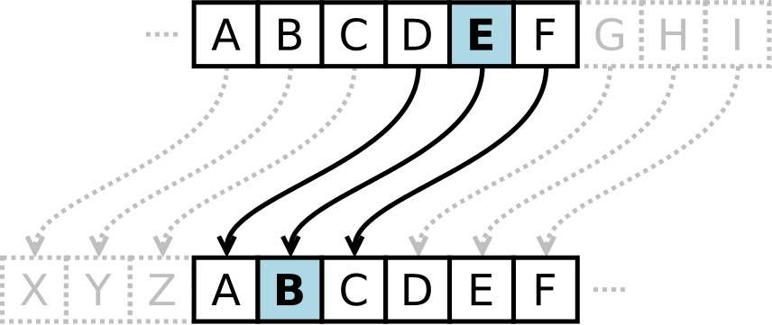

Your Turn--ROT13
So far so good. But that type of encoding was pretty simple. Let's do one just a bit more fancy. This one's called ROT13, or "rotate by 13"(http://en.wikipedia.org/wiki/ROT13). It's a Caesar cipher, used by Romans thousands of years ago.
The gist of it is that we convert the letter to a number, move it 13 places around, and then turn it back into a letter. Now it's less obvious of a message. Here's a pretty good image from Wikipedia, except that in our case, we'll always move it 13 places instead of the three places here.

Another benefit is that because there are 26 letters in the alphabet, to decrypt it, you'd just rotate it 13 characters again.
So "puppy playpen" would be "chccl cynlcra", which looks much more like gibberish.
There's a second, commented method call in "CrytographyMain.java"--comment your alphanumberic line, and uncomment the Rotation one. Fill in the method in your Cryptopgraphy class. Modulus will be very helpful in this rotation.
Hit next when you've got it.